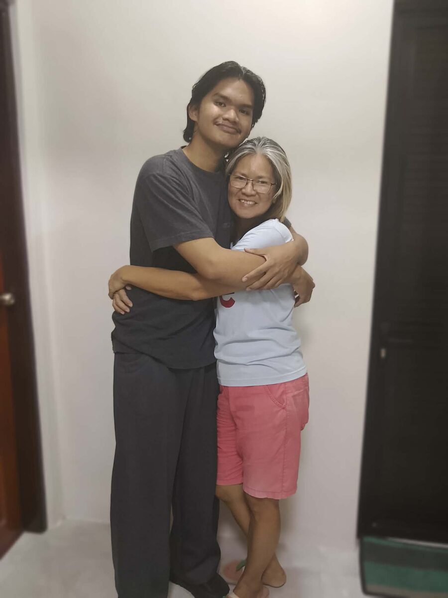
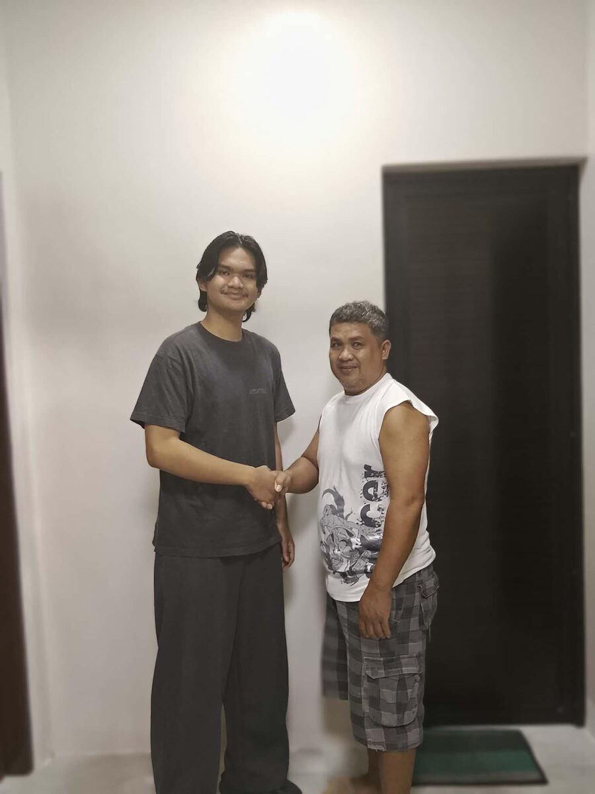

Mom
She has always supported me and been there for me, through every late night and every hard day, and she has never stopped believing in me.

She has always supported me and been there for me, through every late night and every hard day, and she has never stopped believing in me.

He is always proud of everything I do, big or small. That quiet pride is what keeps me going and makes me want to do better.
She has been there for my whole academic journey. She is only a year older than me, so I always saw her around school. She was even my teammate in Online Publishing 2025.
They are always there for me, in the highs and the lows. Here's to every laugh and every win we shared.